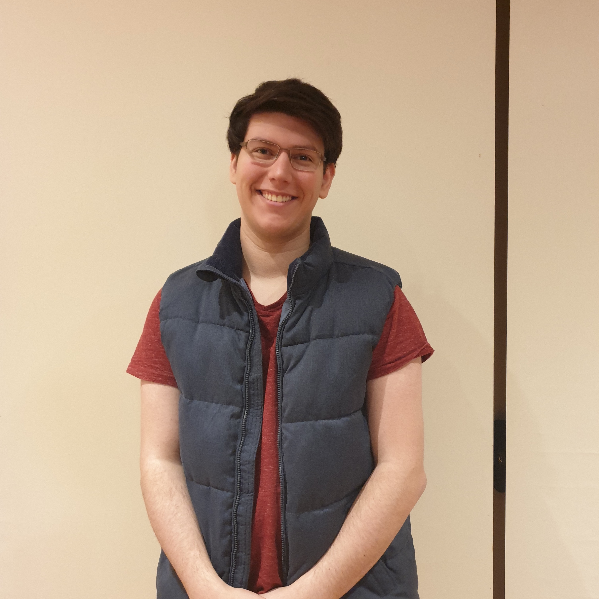
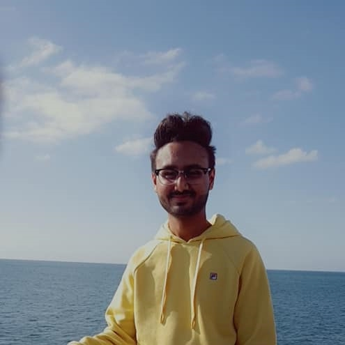
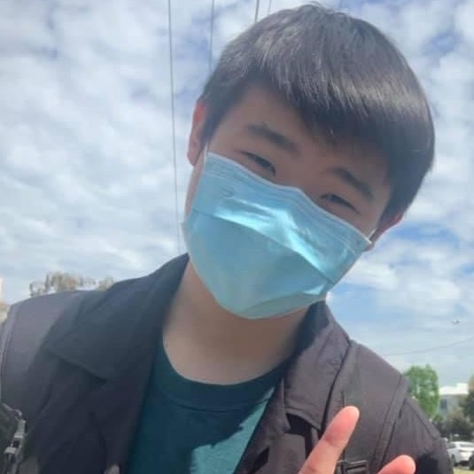

Team Information
Yonathan Kogan

Personal Information
Hi, my name is Yonathan Kogan, student number s3719826 and am a member of the Pringle Pacers team. I was born in Israel and have Russian parents; I have been living in Australia for the last 12 years. I speak Hebrew, Russian and English although English is my most fluent language, I have studied Computer Science at RMIT for 4 years now with this being my last semester. My favorite hobby other than playing games (who does not) is building 3D puzzles!Profile
As an Adventurer, these tests let me know that I have the personality that works hard and strives to improve myself, it also tells me that I like to experiment with new things to improve myself and change the way I am. Although these personality tests may tell me who I am or how I interact with life, I think that everything depends on the scenario and my behavior would depend on the team and their personalities. When forming a team, personality doesn’t matter too much, as long as they are cooperative as a team and work hard the rest of your personality shouldn’t matter, you can be whatever you want as long as you do your job.Harshnoor Singh

Personal Information
Hi, my name is Harshnoor Singh, student number s3943355. Currently a member of the Pringle Pacers team. currently in my first year of Bachelor of Information Technology at RMIT (Royal Melbourne Institute of Technology) University. Originally born in India, I first came to Australia at the age of 5 years old. Born in the state of Punjab to a Sikh family, I can speak 3 languages, that include Punjabi, Hindi, and English. In my free time, I enjoy playing games, especially Overwatch. I also enjoy watching movies, my favourite one being Avengers: Infinity War and TV shows, even though I do not have a favourite I am looking forward to the new season Stranger Things and The Boys. I also enjoy watching, Fireship which is a YouTube channel, which shows off different programming languages and their frameworks and all the interesting things that they have been used for. I am also experienced in programming in python and am familiar with the Flask web framework. Along with programming, I also enjoy PCs, having built my own PC and helping a few friends choose parts and build their own.Profile
As a Protagonist, Harshnoor strives to have a positive impact on other individuals and the world around them. They do not easily shy away from an opportunity to do what’s right, even if doing so is difficult. They can be relied upon to fulfill their role is a team-centred environment, as they are hardworking, reliable, and eager to help. As a Theorist, Harshnoor is also able to think of problems in a logical manner, as they value reasonability above all else. Harshnoor Singh exemplifies a trait of Conscientiousness and extroversion, which means they are often hardworking, careful, and outgoing. An IT team is likely to benefit from their curious mind and is likely to work well other individuals due to their extroversion trait.Armand Lopez
Personal Information
My name is Armand Lopez (S3951404), I am 19 years old, I am studying a Bachelor of Information Technology at RMIT, and I am a member of the group Pringle Pacers. I was born in the Philippines, where I would live there until I was 6 years old, and then my family and I would then move to Australia. I speak both Tagalog (Filipino) and English, but I tend to prefer speaking English because I am more accustomed to it. I belong to family of four, with my sister being the youngest and myself being the oldest. In terms of IT experience, I have experience in the basics of programming using python and visual basic, which I learned during high school and would study IT at university to advance and learn new and old IT skills. My hobbies include watching movies, with action and fantasy being by favourite movie genres and playing video games, where I would enjoy a variety of games with my friends.Profile
As an Adventurer, Armand is an open-minded and peaceful individual. They are an individual acts freely and does not dwell on the past, rather they only focus on the present. They also aim to create friendly relationships with those around them which can be helpful in a group environment as they can be expected to respect, act kindly and comfort others which can strengthen the bond between the group. Armand is a visual learner who excels at observation and memory skills, and this is helpful in team as they can retain a lot of information and can be used to help other group members. Armand tends to display the trait of agreeableness, which means that they are supportive, considerate, and altruistic. They can be helpful in a group as they are able to collaborate with others well, while also having the goal to achieve harmony and make sure that everyone is successful.Cheuk Lam Chung (Kandy)
Personal Information
My name is Cheuk Lam Chung (Kandy). Student number is s3655395. Student email is s3655395@student.rmit.edu.au. Our team's name is Pringle Pacers. About myself, I am from Hong Kong, I can speak English, Cantonese, Mandarin and a little bit of Japanese. I have been in Australia for 4 years. Last year I owned a puppy named Tom who is 5 month old. Since I was in high school, I have been interested in IT, especially building software/coding. That is why I chose my major to Bachelor of Information Technology. So far I have experience in Java, HTML, CSS, Database, OpenGL, React, C++. I built a social website using react last year. I also built a simply Spaceship game using C and OpenGL. My IT interest is to build applications that could help people to solve problems and build games. Therefore, my ideal job is to be a software developer or game developer.Profile
According to the 3 test results, which shows that I am a visual learner. I feel confident to do that task about pictures, design and drawing. I could help Pringle Pacers to achieve those visual parts, such as UX/UI design, framework. Also I am a flexible person and I am not a judger. I never stubun. I feel free to listen to different opinions and change. I rarely argue with my teammates. I would find a way to balance both opinions. Which could make the group always stay calm and think properly. Sometimes I will follow my feeling rather than thinking, which means I could come up with many ideas for my team. Because some people may think too much or too care about the rule, causing them difficulty to come up with innovative ideas.Daniel Tran
Personal Information
My name is Daniel Chinh Quoc Tran, student number: s3953525, I am an Australian born male, with Vietnamese ethnicity. I studied at Mount Waverley Secondary College for my secondary college and in VCE undertook the subject of Software Development, it being my first form of experience in the IT world, my interest in IT is how Data Analytics can be foundation to determine what changes must be made in the game to make the experience healthier by observing and analysing raw data and statistics to make the game healthier, less frustrating and overall better for the players in. Something interesting about myself is that I have coached youth basketball for three years, before the COVID pandemic. I am working with the group Pringle Pacers as of this assignment.Profile
The results of my personality test have determined that I am an ENFJ-A which is a protagonist type moral leader, while the learning style test determines that while I can draw from audio, visual and tactile learning, I gain the most from visual learning and personality trait scores determine I have the most within openness and extraversion of the 5 personality traits. This information obtained can determine that I should try to guide the group morally and use graphical depictions to better understand new content. I should also try to leverage the personality trait of openness and extraversion to help gather opinions or criticisms from another or towards myself, to better the group by providing ideas that will help advance our project or to provide solutions to the problems of it.Sheng Syue Tseng

Personal Information
My name is Sheng Syue Tseng (Sean), and my student number is 3939810. I am currently doing my first year of Bachelor of Information Technology at RMIT University in Australia. I am half Taiwanese and half Cantonese who was born in Vietnam now undergoing education in Australia. I first arrived in Australia in 2018 when I was 14 years old. An interesting fact about myself is that I can speak fluently in 4 languages which consisted of Chinese (Mandarin), Cantonese, Vietnamese, and English. My hobbies are games, movies, anime, manga, and comics. For games, I mostly play First Person Shooter (FPS) games such as Counter-Strike Global Offensives (CSGO) and Overwatch, I have over 700 hours in CSGO and over 300 hours in Overwatch, other games that I played are Team Fortress 2 and the Pokémon franchise which I have also devoted a lot of my time into. I have watched a lot of videos about building machines and robotics which sparked my interest in IT as I would like to build my own project in the future. I have no prior experience in IT, the only experiences I have got so far are website making from the previous assignment and a little bit of python from Introduction to ProgrammingProfile
As an architect, Sean is a perfectionist meaning he aims to improve himself while also keeping his work at his best so that he can meet his own standards. Being a reflector, Sean is overly cautious making him more prone to notice trivial details that the team may miss which can contribute to the quality of the work. Sean is also a transformative leader, making him hungry for knowledge, this allows him to constantly look for ways to improve so that the quality of his work can be better. The team would benefit from Sean’s high standards of himself which can leads to a better quality of work for his team.Ideal Jobs
Harshnoor: Software Engineer
Daniel: Data Analyst
Kandy: Software Engineer
Yonathan Kogan: Software Engineer – Full Stack
Armand: Software Engineer
Syue – Data Scientist
Similarities and Differences
- Looking at the trends of ideal jobs, it seems that Software Engineering is the most desired job title, followed by Data Scientist in the near second (Data Analyst doing pretty much the same as a Data Scientist).
- The main difference between a Software engineer and a Data Scientist is the Software Engineer will build around the data to produce a final product, whereas a data scientist will use the data to redisplay to show it as the final product.
- As a Data Scientist, you are likely to utilize languages like Python, as libraries like Pandas make a popular option among many Data Scientists. Whereas as the most used language for Software Engineers is JavaScript as, it allows developers to write front-end code and back-end code, through libraries like React.JS and Node.JS.
- The main technical similarity between a software Engineer and Data Scientist is that they both must make use of SQL, which is a database query language, to retrieve and write data to a database.